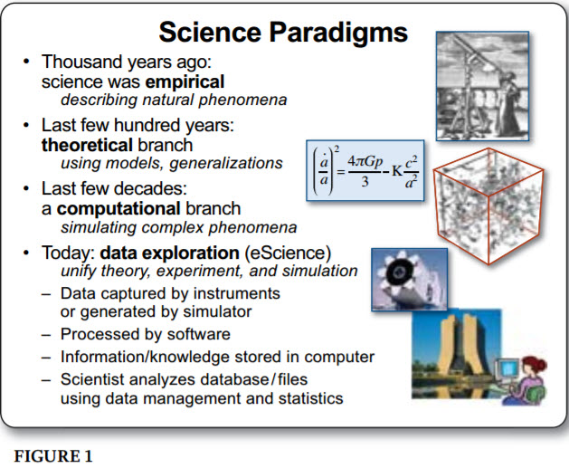

")
李開復先生的世代說有何問題？
|
前言
李開復博士在他的fb上有一篇探論人工智慧在台灣發展的文章，談到ICT(Information and Communication Technology)的世代交替分別如下：
ICT高科技朝代迭代是快速，有週期，有連續性。從半導體->PC->軟體->Internet->社交->行動->大數據->AI
我個人覺得這個分法有點不倫不類，把世代和服務混為一談的確有點張飛打岳飛。
根據Jim Gray 2003年在The Fourth Paradigm: Data-Intensive Scientific Discovery這本書中的說法，ICT工業的出現不過就這幾十年，而這幾十年間，ICT工業向前進的動力就是運算(Computation)。
根據Jim Gray的說法，Computation是第三代範式，運算就是這個範式的基礎。當然運算一直是以半導體(硬體)的運算能力為代表，因此從半導體開始的世代交替，是離不開硬體的。
第三代範式中的世代
然而李博士所提到的軟體、社交等，充其量只是附隨在運算這個範式中，每一個世代所伴隨而來的無形服務而已。我覺得在第三範式中，世代交替應該以運算為主軸，因此我個人的看法是：
半導體->PC->網際網路->行動->雲端
而在這些不同的世代中，伴隨「運算」核心而產生的服務應該就是：
專屬軟體(半導體)->軟體(PC)->網站(網際網路)->APP(行動)->O2O(雲端)
整理如下表：
| 世代 | 運算(硬體，有形) | 服務(軟體，無形) |
|---|---|---|
| 半導體 | 半導體 | 專屬軟體 |
| PC | PC | 軟體 |
| 網際網路 | 路由器/伺服器 | 網站 |
| 行動 | 行動裝置 | APP |
| 雲端 | 集群運算能力及終端 | O2O |
世代交替並非取代而是包容，新的世代當然包容了舊的世代，這和新的範式包容舊範式的意義完全一樣。
PC世代將專屬軟體吃掉，成為開放軟體平台，PC並非讓半導體消失，而是更發揚了半導體的功能。
網際網路並非讓PC消失，而是讓PC成為網路終端的一部分，網站當然也沒有讓軟體消失，而是讓軟體成為HTTP或其它協議交匯的一個點。
當然行動世代也沒有讓網際網路世代消失，而是讓固定在機房中的網站和伺服器，成為行動網路中的一個「不行動」的點。
雲端世代當然包括了行動世代，所對應的就是O2O的服務充斥。君不見UBER、TURO這種將有形無形資源平均到每一個角落的新式服務，當然就是靠線上的伺服器(雲端)以及線上的行動裝置及人類合理完成的。
回到李開復先生的論點
軟體是PC產業所創造出來的無形服務，他並沒有取代或包容PC成為一個新的世代，沒有PC軟體怎麼可能存活？當時的Wintel說法，再再證明PC和軟體互為依附生存。
另外社交當然是網際網路世代所產生的服務之一(網站)。早在行動裝置出來之前，FB就開始流行了，FB當然是依附在HTTP協定上的一個服務(就算行動裝置出來也一樣)，他並沒有取代網際網路世代。
另外從行動跳到大數據，也有點唐突，因為中間還有一個世代就是雲端。雲端代表著虛擬化的極緻，當軟體離開硬體可在任意機器上運行(軟體的虛擬化)；當作業系統離開硬體可在任意機器上運行，並且透過網路傳回運算結果時，我們可以說硬體本身已經離開硬體本身了，而硬體竟然具有加減乘除出現消失的特性(Amazon EC2, Google Compute Engine)時，雲端的概念才逐漸成形。
而Hadoop MR或YARN的出現，再再告訴我們叢集運算(可加疊運算)，正是為了處理下一代大數據在作準備，只是，這次不再是在範式間的世代交替，而是正式進入了範式轉換(Paradigm Shift)。我們即將從第三範式的運算，正式進入了第四範式的Data exploration。
即將進入第四代範式的第一世代

此時，李開復先生所謂的ICT將不復存在，取而代之的則是所謂的DT( Data Technology)，而在第四代範式中，所出現的第一個世代，就是大數據世代。那麼伴隨大數據世代的第一個無形服務，自然就是李先生所提的人工智慧。
| 世代 | 運算(硬體，有形) | 服務(軟體，無形) |
|---|---|---|
| 大數據 | 雲端及叢集 | 人工智慧 |
因此我覺得正確的分法，應該是
第三代範式
| 世代 | 運算(硬體，有形) | 服務(軟體，無形) |
|---|---|---|
| 半導體 | 半導體 | 專屬軟體 |
| PC | PC | 軟體 |
| 網際網路 | 路由器/伺服器 | 網站 |
| 行動 | 行動裝置 | APP |
| 雲端 | 集群運算能力及終端 | O2O |
第四代範式
| 世代 | 運算(硬體，有形) | 服務(軟體，無形) |
|---|---|---|
| 大數據 | 雲端及叢集 | 人工智慧 |